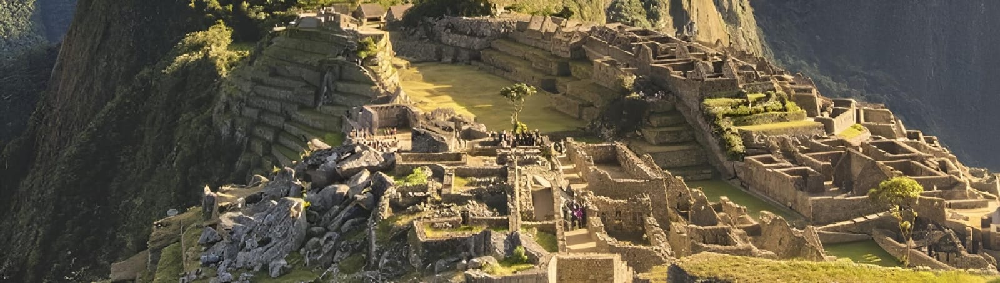

Perú
La riqueza cultural de Perú se manifiesta de manera excepcional en sus artesanías, que son un reflejo de la diversidad y la historia milenaria del país. Desde los tejidos de alpaca y vicuña elaborados por las comunidades andinas hasta la cerámica tradicional de Chulucanas y las tallas en madera de la Amazonía, cada pieza artesanal representa la conexión con el pasado y el entorno natural. Los colores vivos, los diseños geométricos y los materiales autóctonos cuentan historias que han sido transmitidas de generación en generación.
Artículos
Chullos
Los chullos son gorros con orejeras que se usan en las regiones andinas de Perú. Se tejen a mano con lana de alpaca, llama, vicuña u oveja, y se caracterizan por sus diseños multicolores. Se usan para protegerse del frío intenso de la puna. El vellón de alpaca es termorregulador y aísla a quien lo usa de las duras condiciones de la región.
Algunas de las principales provincias productoras de estos gorros son; Arequipa, Cusco, Huancavelica, Junín, Lima, Puno, Tacna.
Nombre: Laura González
Correo electrónico: lau77gzl@gmail.com
Textiles Andinos
Los textiles andinos son obras de arte que transmiten información sobre la cultura, la historia y los valores estéticos de los pueblos andinos. Se caracterizan por su complejidad y variedad de colores y texturas. La isla Taquile, en el Lago Titicaca, es un lugar donde se preserva el arte textil peruano. En esta isla, los descendientes de las culturas Pucará, Colla e Inca transmiten de generación en generación las técnicas de elaboración de tejidos, asi como en las provincias de Puno y La Libertad.
Nombre: Manuel Soto
Correo electrónico: manuelgsoto@gmail.com
Cerámica Chulucana
La cerámica de Chulucanas es un tipo de alfarería originaria de la ciudad de Chulucanas, en la provincia de Morropón, Perú. Es un ejemplo del arte tradicional peruano y un reflejo de la identidad de la comunidad. Los principales componentes naturales son la arcilla, la arena, las hojas de mango y el clima.
Nombre: Santiago Gutiérrez
Correo electrónico: santiarte@outlook.com